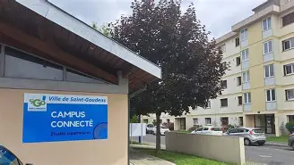

Campus Connecté Comminges-Pyrénées

Résumé du Stage
Dans le cadre de mon stage d’informatique au Campus Connecté de Saint-Gaudens, j’ai participé au développement d’une application web destinée à moderniser la gestion administrative des étudiants : présence, absences, événements, ateliers, sessions et statistiques.
Ce projet avait pour objectif de remplacer une gestion encore majoritairement papier par un outil numérique centralisé, sécurisé et plus adapté aux besoins quotidiens de l’établissement.
À propos de l'Organisation
Le Campus Connecté Comminges-Pyrénées accompagne les étudiants dans leur formation et leur quotidien, en leur offrant un lieu de travail, des ressources pédagogiques et un soutien personnalisé.
Sa mission principale est de faciliter l’accès aux études supérieures, notamment pour les personnes rencontrant des difficultés géographiques ou matérielles.
Missions et Objectifs
Missions initiales prévues :
- Développer une application de gestion des absences / présences
- Créer un système de prise de rendez-vous
- Gérer les événements et ateliers
- Migrer l’ancien site vers celui de la mairie
- Automatiser les publications sur les réseaux sociaux
Missions réellement effectuées :
- Migrer le site du Campus vers la plateforme de la mairie
-
Développer une application web complète (type Pronote) avec :
- Gestion des présences / absences
- Gestion des ateliers, événements et sessions
- Statistiques avancées (taux de présence, graphiques…)
- Justification des absences (étudiants & personnel)
- Interface étudiante + interface personnel
- QR Code pour l’enregistrement de présence
- L’automatisation des posts n’a pas pu être réalisée faute de temps
Compétences Développées
Technologies Utilisées
Projets Réalisés
- Enregistrement automatique des présences via QR Code
- Gestion des ateliers, événements et sessions
- Suivi des absences avec justificatifs
- Tableau de bord statistique personnalisable
- Mise en place d’une base de données complète et modulable
- Migration du site vers le portail de la mairie
2 des 3 missions principales ont été finalisées à 100%.
Difficultés Rencontrées
- Difficulté à transmettre une donnée JS → PHP (résolu avec AJAX)
- Choix et organisation des statistiques (solution : échange direct avec Magali)
- Gros problème final : impossibilité d’accéder à la caméra sur un site non sécurisé (HTTP) → solution de dernière minute : installer l’application sur chaque poste
- Erreurs liées à la version PHP du serveur
- Code manquant ou incompatible lors du déploiement
Malgré ces obstacles, chaque problème a été analysé, compris et résolu de manière méthodique.
Conclusion
Ce stage a été extrêmement enrichissant, tant sur le plan technique que personnel. Malgré les difficultés et le manque de temps sur certains aspects, nous avons réussi à livrer une application fonctionnelle, utile et adaptée aux besoins du Campus.
J’ai appris de nouvelles technologies, amélioré ma méthode de travail, découvert l’importance d’une bonne organisation et compris l’importance d’anticiper les problèmes techniques avant le déploiement.